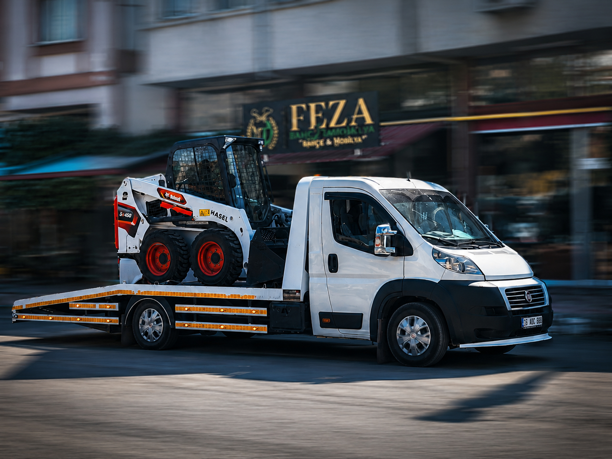

FEZA Servis Eskişehir
Araç Kurtarma
Eskişehir'de yolda kalan, çamura saplanan veya taşınması gereken araçlar için hızlı yönlendirme ve güvenli kurtarma desteği.
Hizmet Detayı
Eskişehir araç kurtarma hizmetinde öncelik konumu hızlı almak, aracın durumunu anlamak ve doğru ekipmanla güvenli müdahale etmektir. Acil durumlarda telefon veya WhatsApp üzerinden hızlıca iletişim kurulabilir.
Hangi Durumlarda?
- Yolda kalan veya hareket edemeyen araçlarda
- Çamur, arazi veya zorlu zemine saplanma durumlarında
- Aracın güvenli şekilde çekilmesi veya taşınması gerektiğinde
Süreç Nasıl İşler?
- Konum ve araç durumu alınır.
- İhtiyaca göre yönlendirme yapılır.
- Güvenli kurtarma veya taşıma işlemi planlanır.